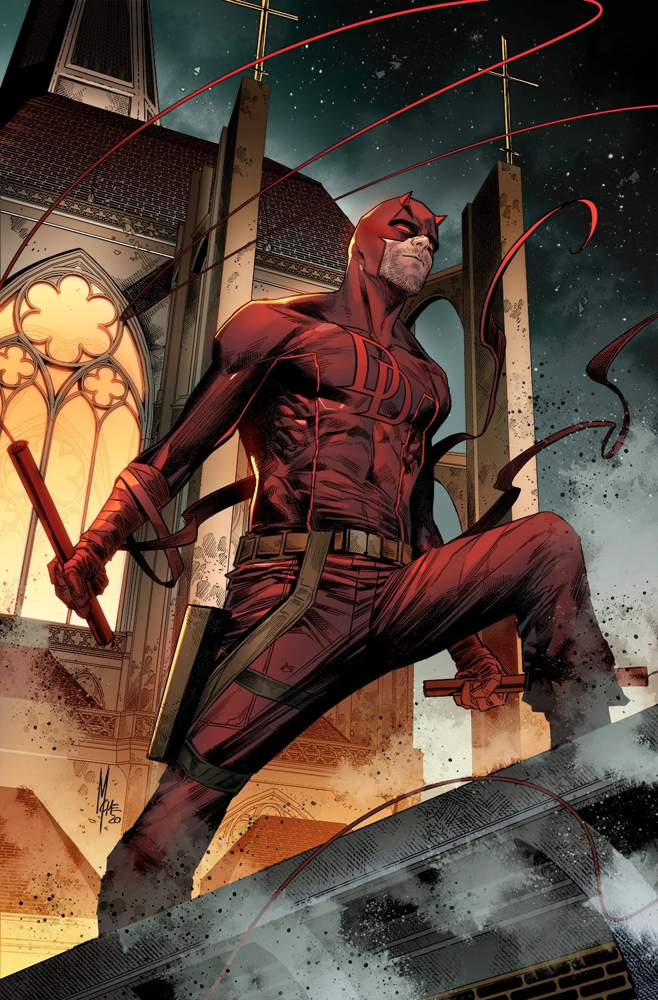

Daredevil is a lawyer who was blinded as a young boy by a radioactive substance and became a vigilante known as the Masked Man. He fought against mobsters, the Hand, and other villains in New York City, using his other senses to his advantage. He also faced personal challenges such as Elektra, Stick, and Fisk.
POWERS:RADAR SENCE,NINJA TRAINING
WEPONS:BATTON WITH A CHAIN
FRIENDSFOGI NELSON,CARON PAGE, STICK